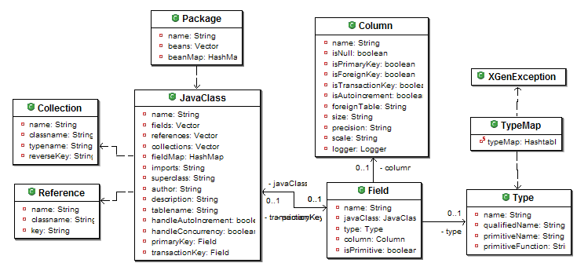

Java Package Model
The workzen.xgen.model.Package class models a standard Java object oriented model. It provides accessors to all OO elements: classes, attributes, contained objects and references.

Input
A java model could be created from a number of sources; manually, using introspection, using an rdbms schema, or an xml file.
| input | loader |
|---|---|
| xml schema | workzen.xgen.loader.JavaModelXmlLoader |
Output
workzen.xgen.engine.VelocityProcessor
| output | template |
|---|---|
| JDBC table classes | templates/persistence/manager/control_table.vm |
| JDBC mgr classes | templates/persistence/manager/control_manager.vm |
| XML schema | templates/schema/package2xgen.vm |
| POJO classes | templates/pojo/control.vm |